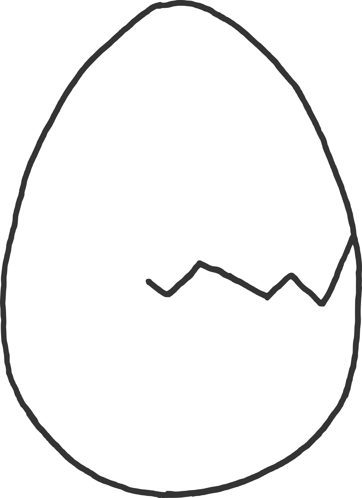
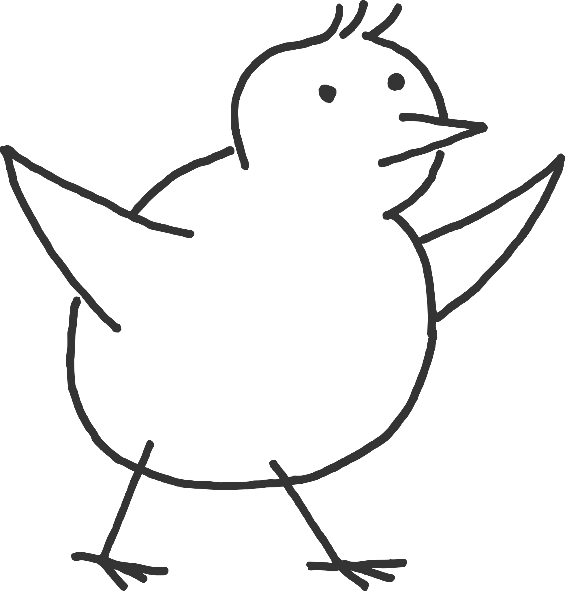

Cesta juniora#
Uvažuješ o programování? Přemýšlíš nad kariérní změnou do IT, ale nevíš jak na to? Láká tě zjistit, jak automatizovat část své práce? Studuješ informatiku a zajímá tě, co dál? V téhle příručce se postupně hromadí veškerá moudrost, která na toto téma existuje.
Na základě reálných zkušeností mnohých začátečníků jsme v klubu sestavili osvědčenou cestu juniora. Možná existují i jiné cesty, ale tato úspěšně zafungovala pro spoustu různých lidí, a proto ji lze obecně doporučit. Ne všechna témata se zatím povedlo pokrýt kapitolami v příručce, ale na klubovém Discordu se všemi pomáháme a diskutujeme je.
Ujasni si, co už umíš a co je tvým cílem. Jednak ti to pomůže uvědomit si, co tě ještě čeká a co nesmíš vynechat, jednak zjistíš, které části příručky pro tebe budou nejpřínosnější.
Příručka je živá stránka a kdykoliv tady může přibýt něco nového, takže je dobré se sem vracet. O změnách se můžeš dovědět prostřednictvím klubu nebo newsletteru.
Celá cesta má zhruba 9 fází a připomíná Člověče, nezlob se. Namalované je to hezky jedno za druhým, ale realita je zamotanější. Nemálo lidí se několikrát vrací do domečku. Počítej s tím, že se někde zasekneš, nebo že se ti zamíchá pořadí. U každé fáze je v popisku naznačeno, s jakými problémy ti junior.guru může pomoci.
Přemýšlím
Občas mě napadne, že by nemusela být úplná blbost učit se programovat. Potřebuji víc informací, ať vím, jestli do toho jít. Nevím, zda se na to hodím.
Proč programovatMýtyŽeny v ITRodiče v ITBez kódu
Plánované kapitoly: Data
Zkouším
Zkouším všechno možné. Nevím, čím začít. Neumím vybrat směr. Začínám s tím, o čem si myslím, že to chci dělat.
Plánované kapitoly: Co sledovat
Učím se
Učím se to, co si myslím, že chci dělat. Samostatně, ve škole, v kurzu. Nejde mi to. Neumím vybrat kurz, nebo neplní moje očekávání. Jedu jeden kurz za druhým, ale nevím jak dál.
ZákladyAngličtinaVybírání kurzuProcvičováníŘešení problémůMentoringGit a GitHubSpoluprácePsychika
Plánované kapitoly: Co sledovat, Studium informatiky, Zdraví těla na cestě do IT

Tvořím
Pracuju na projektech, vytvářím si portfolio. Nevím jak začít, co tvořit. Zasekávám se, nikdo mi nepomáhá, nevím jak dál. Nevím, jestli můj výtvor nemá zásadní chyby.
ProcvičováníŘešení problémůMentoringProjektyGit a GitHubSpolupráce
Chci hledat práci
Ladím CV, LinkedIn, GitHub. Pasivně pokukuji po nabídkách. Nevím, zda už umím dost. Neumím se prodat. Mám problém o sobě do CV napsat pozitivní větu.
Ženy v ITRodiče v ITAngličtinaKomunityMentoringGit a GitHubPsychikaHledání práceŽivotopisGitHub profilLinkedInPohovor
Plánované kapitoly: Co sledovat, Práce na dálku
Hledám práci
Hledám práci, stáž, brigádu. Reaguji na nabídky, posílám CV, chodím na pohovory. Nemám zpětnou vazbu, nezvou mě. Nevím, co se ode mně čeká. Neposoudím, zda jde o běžný zážitek z pohovoru, nebo šlo o divnou firmu. Dochází mi čas a úspory.
Ženy v ITRodiče v ITKomunityPsychikaHledání práceLinkedInPohovor
Plánované kapitoly: Práce na dálku

Mám nabídku
Mám nabídku a rozhoduji se, zda ji přijmout. Váhám, zda nevzít cokoliv, jen aby už něco bylo. Mám domluvenou práci a nastupuji v budoucnu. Nástup mě děsí, nevím co mě čeká.
Zaučuju se
Zkušební doba, první práce v oboru. Zaučuji se, zjišťuji co je běžné, vyrovnávám se s nároky. Pokud nemám k dispozici seniory, topím se v úkolech. Pokud je firma špatná, bojím se odejít.
Plánované kapitoly: Co sledovat, Práce na dálku, Zaučování
Mám komerční praxi
Mám jeden až dva roky komerční praxe. Možná už nejsem junior. Posouvám se dál, řeším kariérní růst. Nevím, jak dostat složitější úkoly nebo větší peníze.
Plánované kapitoly: Zaučování
